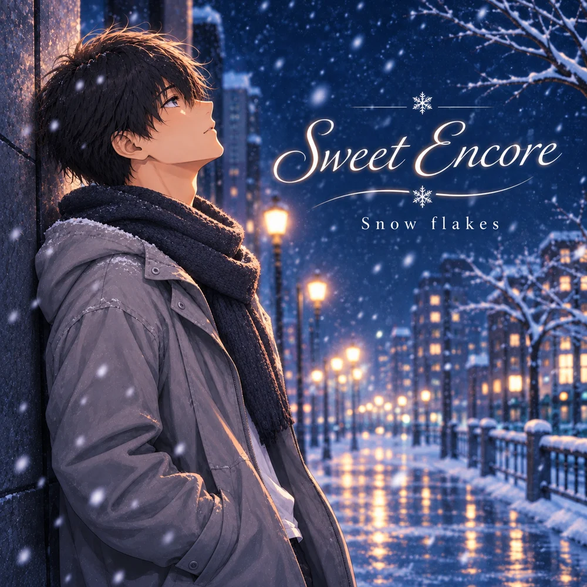

各話一覧
2026年12月11日から毎日20時に一話ずつ公開します。最終話は12月25日です。
前日の12月10日20時には、Instagram で先行短篇を公開します。
SNOW FLAKES SHORT STORY
Snow flakes 短篇連作・全十五話
作：山吹ことり
2026年12月11日 連載開始
道内ツアーを終えたSnow flakesは、
年明けに発売するアルバムの仕上げに追われていた。
クリスマスまで埋まった予定。
そして、仕事の合間に
恋人へのプレゼントを決められず、
誰にでも気が利くのに、
そしてヒナタは、
大切な人を喜ばせたい。
音楽と日常の間で、
クリスマスへ向けて静かに動き始める。
Snow flakesと大切な人たちの冬を描く、
2026年12月11日から毎日20時に一話ずつ公開します。最終話は12月25日です。
前日の12月10日20時には、Instagram で先行短篇を公開します。

テーマ曲
『Sweet Encore』
Snow flakes ／ 2026年12月25日 配信予定
楽曲ページへ →